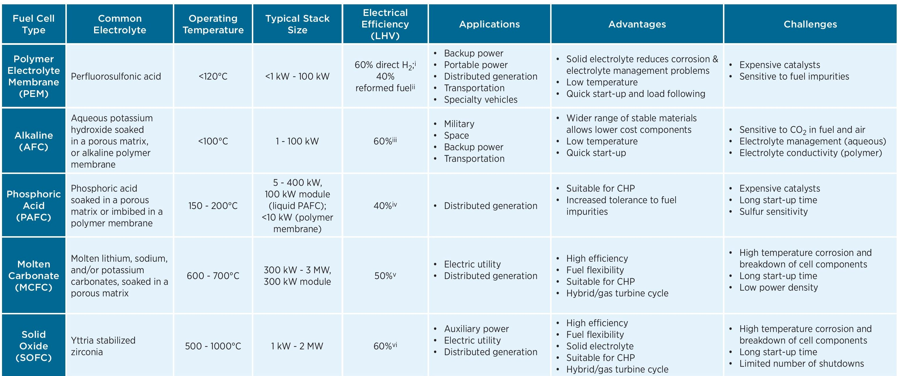

Electric & Hybrid Vehicle Seminar
Phosphoric Acid Fuel Cells
TEAM - Nishaanth B S, Padmavathi K, Vishnu Kumar, Yashwanth, Dhilip H
What are Fuel Cells?
A fuel cell is a device that generates electricity by a chemical reaction. Every fuel cell has two electrodes called, respectively, the anode and cathode. The reactions that produce electricity take place at the electrodes.
Types of Fuel Cells
- Proton exchange membrane fuel cells (PEMFCs)
- Phosphoric acid fuel cell (PAFC)
- Solid acid fuel cell (SAFC)
- Alkaline fuel cell (AFC)
- High-temperature fuel cells
- Electric storage fuel cell
Working of Fuel Cells
Construction
.png)
Working
.png)
Anodic Oxidation Reaction
2H2 -> 4H+ + 4e-
Cathodic Oxidation Reaction
O2 + 4H+ + 4e- -> 2H2O
Overall Reaction
2H2 + O2 -> 2H2O
Why Fuel Cells?
- Higher efficiency than diesel or gas engines
- Silent in operation hence best suited for hospitals
- Can eliminate pollution caused by burning fossil fuels
- Low heat transmission which makes them ideal for military applications
- Operating times are much longer than batteries
Phosphoric Acid Fuel Cells
Phosphoric acid fuel cells (PAFC) are a type of fuel cell that uses liquid phosphoric acid as an electrolyte
In these cells phosphoric acid is used as a non-conductive electrolyte to pass positive hydrogen ions from the anode to the cathode
These cells work in temperature range of 150 to 200 deg Celsius. This high temperature will cause heat and energy loss if the heat is not removed properly.
Using the heat generated in cogeneration can enhance the efficiency of PAFC from 40-50% to about 80%
Technical Details of PAFC
- Working - Same as normal fuel cells
- Electrolyte - Highly Concentrated or pure liquid phosphoric acid (H3PO4)
- Operating Range - 150 to 200 deg Celsius
- Efficiency - 55%
- Power - <10MW
Advantages
- Responsive to changing electric loads
- Uses variety of fuels
Disadvantages
- Low power density and aggressive electrolyte
- Lower Efficiency
- Cannot be used in large scale plant
Applications
- Distributed power generation
- Vehicles such as buses and railways
Comparison
Environmental Impacts of PAFC
In general, phosphoric acid is not a dangerous chemical, but improper disposal the Phosphoric Acid fuel cell may cause some environmental pollution and is harm for health
Eye contact can cause redness, pain, tearing, eyelid spasms, blurred vision and permanent damage.